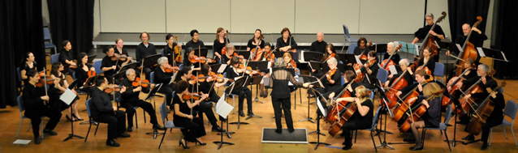

One day Lorraine Hughes (above, left) and
Judy Drake (above, right) walked their dogs around Green Lake. They discussed
what they might do upon retirement. One idea was to lick
envelopes; the other was to start a community orchestra.
They chose the second alternative and began immediately.
The Ravenna String Orchestra, now simply
The Ravenna Strings, was organized in 1996.
As the membership grew and the players became more advanced, a
second orchestra was begun at Langston Hughes Center for
the Arts in 2000. This orchestra later gravitated to the
Ravenna-Eckstein Community Center where it became known as
the Ravenna Second String Orchestra. In 2024, that group
became the The Ravenna String Sinfonia.
After COVID-19, the Ravenna Strings re-grouped under the leadership of Joseph Pollard White. Rehearsals are at the Phinney Center 6532 Phinney Ave. N, Seattle. There are three sessions each year in the Fall, Winter and Spring, each followed by a concert. Concerts are at various locations, most recently
St. Andrew's Episcopal Church 111 NE 80th St., Seattle.
Judy Drake, violinist/conductor, was the director from the
founding of the orchestra through February 2017.
Lorraine Hughes was the co-director/pianist through
February 2017.
Joseph Pollard White, director since 2017, conducts the Thursday night group, the Ravenna Strings.
Nathan Harrison, associate director, conducts the Monday night group, the Ravenna String Sinfonia.
In 2022, Ravenna Strings was incorporated as a non-profit corporation in the State of Washington
Back to home
| By immersing ourselves in what we love, we find ourselves. |
| ~ Lukas Foss |
| 
Photo by Colin Shannon-Garvey
|
|
The richness of the string orchestra literature is a well-kept secret!
|
| -- Unsourced, of course |